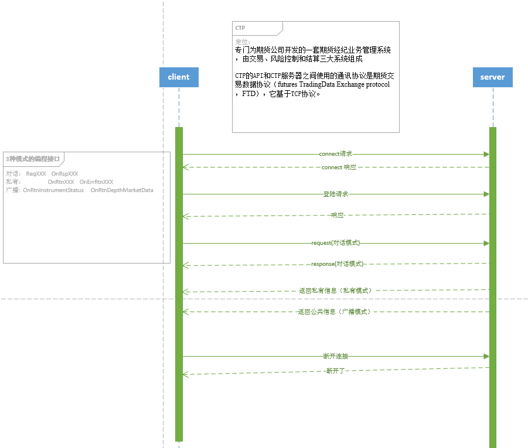

- 作者
- 吴典
Introduction
- 东航资管量化平台 C++ API：
- 基于CTP开发
- 用户可根据需要订阅指定合约的各个周期(tick、秒、分、时)的数据
- 在服务端用mysql(192.168.25.4)备份了所有合约的行情，方便用户随时获取历史数据
- 目标用户: 东航资管程序化交易开发投资者
- 配置文件: ConfigFile.xml 用于设置CTP的行情前端地址、交易前端地址，设置mysql的服务器地址 等
- 日志文件: ctp_matlab.log 详细记录了程序的运行过程
- 交易接口流控: 1、查询1笔/秒 2、指令(报单/撤单/查询):每个客户每连接6笔/秒，超过部分将排队 3、同一账户连接最大前置数:6个
- CTP系统介绍:
综合交易平台（Comprehensive T ransaction Platform） 是专门为期货公司开发的一套期货 经纪业务管理系统，由交易、风险控制和结算三大系统组成，交易系统主要负责订单处理、 行情转发及银期转账业务，结算系统负责交易管理、 帐户管理、经纪人管理、资金管理、费 率设置、日终结算、 信息查询以及报表管理等， 风控系统则主要在盘中进行高速的实时试算， 以及时揭示并控制风险。 系统能够同时连通国内四家期货交易所， 支持国内商品期货和股指 期货的交易结算业务，并能自动生成、报送保证金监控文件和反洗钱监控文件。
综合交易平台借鉴代表了目前国际衍生品领域交易系统先进水平的上期所 “新一代交易 所系统” 的核心技术， 采用的创新的完全精确重演的分布式体系架构， 其保证所有输入经系 统分布式并行处理后均有确定结果，并能自适应 UDP 可靠多播通讯技术，构建交易系统的 核心信息总线，改进了内存数据库的多重索引技术、 直接外键技术和高效事务管理技术， 并 首创了多业务主机同时工作、 互为备份和自由加入的集群容错可靠性保障机制， 攻克了性能 和可靠性关键技术难关， 获得 5 项软件著作权。 系统并发处理能力强大， 委托性能超过 2000 笔/秒，软件本身可达 8000 笔/秒，支持同时在线客户并发数为 1 万个客户/秒，且可以通过 增加前置机进一步扩充。 系统主要面向期货公司， 也可用于基金公司、 投资公司等进行期货 交易。
- CTP系统框架:
- CTP对话模式:

- 后续开发: 1、Qt界面平台 2、其他语言(python、R、matlab)的接口和平台 3、子账号、风控、策略模块